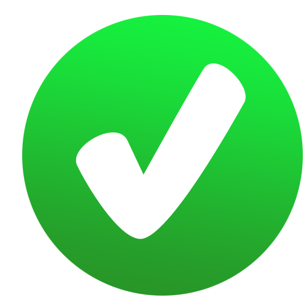

<!DOCTYPE html>
<html class="no-js" lang="es" ng-app="mat101_3">
<head>
	<meta charset="utf-8">
	<meta http-equiv="X-UA-Compatible" content="IE=edge">
	<title></title>
	<meta name="viewport" content="width=device-width, initial-scale=1">

	<link rel="stylesheet" href="../css/app.css">

    <style>
    textarea::-webkit-input-placeholder {
      font-size: 24px!important;
    }
    textarea:-moz-placeholder {
      font-size: 24px!important; 
    }
    textarea:-ms-input-placeholder { 
      font-size: 24px!important; 
    }
    </style>

</head>
<body>
	<!--[if lt IE 8]>
        <p class="browsehappy">You are using an <strong>outdated</strong> browser. Please <a href="http://browsehappy.com/">upgrade your browser</a> to improve your experience.</p>
    <![endif]-->

	<!-- Solo se cambia la clase según la actividad -->
	<div id="container" class="mat" ng-include src="'../views/common/include.html'"></div>

    	<!--templates-->
    <script type="text/ng-template" id="comp">
        <competences-new 
            options="data"  
        ></competences-new>
    </script>

	<script type="text/ng-template" id="con1">
        <slide-show-character 
            options="data"
            description="Las cantidades mayor que (>),  menor que (<) o iguales (=), se identifican por el número mayor, menor o igual de objetos o elementos. Observa los siguientes ejemplos."
            instruction="Haz clic sobre cada flecha para avanzar o retroceder por el contenido."
            audio="C1"
        </slide-show-character>
    </script>

	<script type="text/ng-template" id="act1">
      <transclusion
              audio="A1"
              arrow="true"
              description="Arrastra sobre el cuadro de texto el signo: mayor (>), menor (<) o igual (=), según corresponda. Observa el número de izquierda a derecha.">
      <!--INICIO-->
      <!-- FACES -->
    
    
    <!-- END FACES -->
          <div style="width: 100%;float: left;padding: 10px" class='center-items'>
            <div  ng-repeat="item in items" class="fc-1" style="max-width: 15%;display: inline-block;float:left;font-size: 100px;font-weight: bold;" data-drag="true" data-jqyoui-options="{ revert: 'invalid', helper: 'clone' }" ng-model="item"
                        jqyoui-draggable="{index: {{$index}}, placeholder: '{{preserveOriginal}}'}">{{item.text}}</div>
          </div>
          <div  class="multiple-mark-text" style="margin-left: 4.5vw;max-width: 950px;width: 100%;height: 710px;float: left;position: relative;">

              


              <div  class='border-3px bd-1'style="position: absolute;left: {{target.l +'%'}};top: {{target.t +'%'}};width: 5.7vw;height:65px;margin: 10px;border: 3px solid;" ng-repeat="target in targets" data-drop="{{ target.drop }}" ng-model="target.model" jqyoui-droppable="{ onDrop: 'dropCallback(target)' }" aria-disabled="false" data-jqyoui-options="">
                <div class="fc-1" style="max-width: 15%;display: inline-block;float:left;font-size: 100px;font-weight: bold;line-height: 60px;height: 66px;">{{target.model.text}}</div>
              </div>
          </div>

          <!-- CALIFICATIONS -->
          <div ng-show="success"> <div data-congratulations></div></div>
          <div ng-show="failure"> <div data-failure></div> </div>
      <!--FIN-->
      </transclusion>
  </script>

	<script type="text/ng-template" id="act2">
      <transclusion
              audio="A2"
              arrow="true"
              description="Arrastra sobre el cuadro de texto el signo: mayor (>), menor (<) o igual (=), según corresponda. Observa el número de izquierda a derecha.">
      <!--INICIO-->
      <!-- FACES -->
    
    
    <!-- END FACES -->
          <div style="width: 10%;float: left;padding: 10px" class=''>
            <div  ng-repeat="item in items" class="fc-1" style="max-width: 150px;display: inline-block;float:left;font-size: 70px;font-weight: bold;" data-drag="true" data-jqyoui-options="{ revert: 'invalid', helper: 'clone' }" ng-model="item"
                        jqyoui-draggable="{index: {{$index}}, placeholder: '{{preserveOriginal}}'}">{{item.text}}</div>
          </div>
          <div  class="multiple-mark-text" style="margin-left: 4.5vw;max-width: 950px;width: 75%;height: 710px;float: left;position: relative;">

              


              <div  class=''style="position: absolute;left: {{target.l +'%'}};top: {{target.t +'%'}};width: 3.7vw;height:45px;margin: 10px;" ng-repeat="target in targets" data-drop="{{ target.drop }}" ng-model="target.model" jqyoui-droppable="{ onDrop: 'dropCallback(target)' }" aria-disabled="false" data-jqyoui-options="">
                <div class="fc-1" style="max-width: 15%;display: inline-block;float:left;font-size: 70px;font-weight: bold;line-height: 60px;height: 66px;">{{target.model.text}}</div>
              </div>
          </div>

          <!-- CALIFICATIONS -->
          <div ng-show="success"> <div data-congratulations></div></div>
          <div ng-show="failure"> <div data-failure></div> </div>
      <!--FIN-->
      </transclusion>
  </script>

	<script type="text/ng-template" id="act3">
      <transclusion
              audio="A3"
              arrow="true"
              description="Arrastra y ordena de mayor a menor los siguientes números.">
      <!--INICIO-->
      <!-- FACES -->
    
    
    <!-- END FACES -->
          <div style="width: 100%;float: left;padding: 10px" class='center-items'>
            
          </div>
          <div  class="multiple-mark-text" style="width: 100%;height: 710px;float: left;position: relative;">

              


              <div  style="position: absolute;left: {{target.l +'%'}};top: {{target.t +'%'}};width: 4.4vw;height:70px;margin: 12px;" ng-repeat="target in images" data-drop="{{ target.drop }}" ng-model="target.model" jqyoui-droppable="{ onDrop: 'dropCallback(target)' }" aria-disabled="false" data-jqyoui-options="">
                
              </div>
          </div>

          <!-- CALIFICATIONS -->
          <div ng-show="success"> <div data-congratulations></div></div>
          <div ng-show="failure"> <div data-failure></div> </div>
      <!--FIN-->
      </transclusion>
  </script>

	<script type="text/ng-template" id="act4">
      <transclusion
              audio="A4"
              arrow="true"
              description="Arrastra y ordena de mayor a menor los siguientes números.">
      <!--INICIO-->
      <!-- FACES -->
    
    
    <!-- END FACES -->
          <div style="width: 100%;float: left;padding: 10px" class='center-items'>
            
          </div>
          <div  class="multiple-mark-text" style="width: 100%;height: 710px;float: left;position: relative;">

              


              <div  style="position: absolute;left: {{target.l +'%'}};top: {{target.t +'%'}};width: 4.4vw;height:70px;margin: 12px;" ng-repeat="target in images" data-drop="{{ target.drop }}" ng-model="target.model" jqyoui-droppable="{ onDrop: 'dropCallback(target)' }" aria-disabled="false" data-jqyoui-options="">
                
              </div>
          </div>

          <!-- CALIFICATIONS -->
          <div ng-show="success"> <div data-congratulations></div></div>
          <div ng-show="failure"> <div data-failure></div> </div>
      <!--FIN-->
      </transclusion>
  </script>

	<script type="text/ng-template" id="act5">
       <radio-questions
          options="data"
          audio="A5"
          instruction= "Haz clic sobre el botón que tiene la respuesta correcta para cada pregunta."
          description="En la escuela de Juanito celebraron la feria del libro  3 días seguidos.">
      </radio-questions>
  </script>

	<script src="../scripts/vendor.js"></script>
	<script src="../scripts/app.js"></script>
	
	<script>
		// Necesario para activar la recarga en vivo
		window.brunch = window.brunch || {};
	</script>
</body>
</html>

